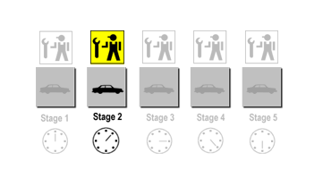

理解流水线与超标量执行¶
本文更新于 2018.10.22
参考: http://archive.arstechnica.com/paedia/c/cpu/part-2/cpu2-1.html
Introduction¶
In my previous article, Understanding the Microprocessor , I gave a high-level overview of what a microprocessor is and how it functions. I talked about the kinds of tasks it performs and the different steps that it goes through to carry out those tasks. The vision of the microprocessor which emerged from that article was fairly simple and straightforward. It was also fairly limited and primitive. Modern microprocessors are more complex–they do more things in more complicated ways than the first article really implies. The present article will discuss two major innovations in processor design that have brought about huge leaps in processor performance: pipelining and superscalar execution. If you’re going to understand modern processors, you have to master these two concepts. Most of the newer tricks and techniques that I’ve covered in previous Ars articles on new CPUs are aimed at improving the performance of one or both of these two fundamental design approaches.
Pipelining Explained¶
You’ll often hear the term “pipelining” in discussions of CPU technology, but the term itself is rarely defined. Pipelining is a fairly simple concept, though, and the following section will make use of an analogy in order to explain how it works.
(Note: The following discussion of pipelining is adapted from one of my articles on the K7, aka Athlon. I’ve reworked the analogy a bit, but the diagrams are the same.)
Let’s say that we at Ars decided to quit doing tech journalism and go into the increasingly lucrative SUV manufacturing business. After some intense research, we determine that there are five stages in the SUV building process, as follows:
- Stage 1: build the chassis.
- Stage 2: drop the engine in the chassis.
- Stage 3: put doors, a hood, and coverings on the chassis.
- Stage 4: attach the wheels.
- Stage 5: paint the SUV.
When we first hit on the idea of using an assembly line, we decided that it would be best to hire and train five crews of specialists, one for each stage of the SUV building process. There’s one group to build the chassis, one to build the engine and drop it in, another for the wheels, etc. Each stage of the SUV building process takes a crew exactly one hour to complete.
Now, since we Ars guys are computer types and not industrial engineers, we’re not too bright when it comes to making efficient use of factory resources. Also, because Ars was started back in the dot-com boom days, we’re still kind of stuck in that mindset so we run a pretty chill shop with lots of free snacks, foosball tables, arcade games and other such employee perks. So our big plan is to have the factory run as follows: we line up all five crews in a row, and we have the first crew start an SUV at Stage 1. After Stage 1 is complete, the SUV moves down the line to the next stage and the next crew drops the engine in. While the Stage 2 Crew is installing the engine in the chassis that the Stage 1 Crew just built, the Stage 1 Crew (along with all of the rest of the crews) is free to go play foosball, watch the big-screen plasma TV in the break room, surf the ‘net, etc. Once the Stage 2 Crew is done, the SUV moves down to Stage 3 and the Stage 3 Crew takes over while the Stage 2 Crew hits the break room to party with everyone else.
The SUV moves on down the line through all five stages this way, with only one crew working on one stage at any given time while the rest of the crews are idle. Once the completed SUV finishes Stage 5, the crew at Stage 1 then starts on another SUV. At this rate, it takes exactly five hours to finish a single SUV, and our factory puts out one SUV every five hours.
The following picture shows our assembly line with a SUV in Stage 2. It’s having it’s engine installed while the other crews are idle.
Now, you may be thinking, Why not just have one full-time crew to do all the work? The nominal, stated reason (i.e. the reason Caesar gave when he was pitching this assembly line idea to the rest of the Ars team) is that each stage of construction requires a specific skill set. If we hire five, highly skilled crews to do the job then it’ll wind up taking us less time overall to build a SUV than if we hired only one crew that’s not very good (or very fast) at completing any of the five stages.
Of course, the real reason for having five crews (at least as far as I’m concerned) is that Caesar, in classic Roman nepotistic fashion, believes in hiring his relatives and in paying them outrageously to spend most of their time playing foosball. And Caesar has a pretty large family. But for the purposes of the present discussion we’ll pretend I didn’t say this.
(Fast-forward one year.) Our SUV, the Ars Extinction LE (if you put “LE” on the end of the name you can charge more), is selling like... well, it’s selling like an SUV, which means it’s doing pretty well. In fact, it was awarded Car and Driver’s prestigious “Ridiculously Aggressive-looking Design of the Year” award, as well as the Global Climate Coalition’s “Excellence in Environmental Innovation” award for its stunningly low 0.5 mpg rating. (In case it’s not obvious, GCC is an “environmental” front group for the oil industry.) So demand for our SUV has speeded up, but unfortunately Caesar’s relatives have not.
Caesar’s first plan for increasing plant output was to hire members of his wife’s family to form a second assembly line, also capable of producing one car every five hours, for a grand total of two cars every five hours from our factory floor. At this point, though, the rest of the Ars crew had become wise to his game, and we put our collective foot down: Big C.’s people will just have to find a way to play less foosball and build more cars.
Lucky for us, Caesar’s Republican instincts have led him to firmly suppress any attempts at labor organizing (even though the “labor” is essentially his family–yes, he is that vicious), which means that our demands for increased productivity won’t trigger a strike. So Caesar and the rest of the board hire a high-priced and high-powered team of consultants to figure out a way to increase productivity. One year and thousands of billable hours later, they hit upon a solution: with proper scheduling of the crews, we can build one SUV each hour, and thus drastically improve the efficiency of our assembly line. The revised workflow looks as follows: Crew 1 builds a chassis and finishes it, and then sends it on to Crew 2. While Crew 2 is dropping the engine in, Crew 1 starts on another chassis... and so on. (Of course, this is how most of us nowadays in the post-Ford era expect a good, efficient assembly line to work.)
If we can keep the assembly line full, and keep all five crews working at once, then we can spit out a SUV every hour: a five-fold improvement in production. Here’s a picture of our fully pipelined assembly line. Notice that all the clocks read the same time. That’s because all the stages are full at once, and all the crews are busy at once. That, in a nutshell, is pipelining.
So, back to the world of computers. You might recall from the previous article that a computer basically just repeats four basic steps over and over again in order to execute a program:
- Fetch the next instruction from the address stored in the program counter.
- Store that instruction in the instruction register and decode it, and increment the address in the program counter.
- Execute the instruction in the instruction register.
- Repeat steps 1-3.
You should also recall step 3, the execute stage, itself consists of three steps. In the case of the ADD A, B example that we used last time, the steps are:
- Read the contents of registers A and B.
- Add the contents of A and B.
- Write the result back to register A.
At this point, I’d like to modify the first list above by removing step 4 as an explicit step and replacing it with step 3 from the second list. Here’s what I’m talking about:
- Fetch the next instruction from the address stored in the program counter.
- Store that instruction in the instruction register and decode it, and increment the address in the program counter.
- Execute the instruction currently in the instruction register.
- Write the results of that instruction from the ALU back into the destination register.
In a modern processor, the four steps above get repeated over and over again until the program is done executing. These are, in fact, the four stages in a classic RISC pipeline. Here are the four stages in their abbreviated form, the form in which you’ll most often see them:
- Fetch
- Decode
- Execute
- Write
To return to our assembly line analogy, each of the above stages could be said to represent one stage in the life-cycle of an instruction. An instruction starts out in the fetch stage, moves to the decode stage, then to the execute stage, and finally to the write stage. Early processors were like our first, inefficient assembly line: there was only one instruction in the pipeline at a time, and as the instruction moved to each successive stage all of the other stages would lie idle. The result of this was that if each stage took 10 ms to complete, then the processor could finish only one instruction every 40 ms.
Once pipelined execution is introduced, the four stages act like four stages in a regular automotive assembly line. When the pipeline is at full capacity, each stage is busy working on an instruction and the whole pipeline is able to spit out one instruction right after the other. If each stage takes 10 ms to complete, then a full pipeline can process one instruction every 10ms.
Basic instruction flow¶
One useful division that computer architects use when talking about CPUs is that of “front end” vs. “back end” or “execution engine.” As already know, when instructions are fetched from the cache or main memory, they must be fetched and decoded for execution. This fetching and decoding takes place in the processor’s front end . The front end roughly corresponds to the control and I/O units in the previous article’s diagram of the programming model.
The following diagram, along with some of the current discussion, was adapted from my first P4 vs. G4e article. It shows three different execution units: the load-store unit (LSU), the integer or arithmetic-logic unit (ALU), and the floating-point unit (FPU). Since we haven’t yet talked about putting more than one execution unit in the processor, just ignore the LSU and FPU for now. They’ll show up again in the next section.
Instructions make their way from the cache to the front end and down through the execution engine (or back end ), which is where the actual work of number crunching gets done. The back end corresponds roughly to the ALU and registers in the programming model.
Here’s a diagram of instruction flow that shows all four pipeline stages. Note that in this particular diagram the write stage happens to be labeled “retire.”
This basic pipeline represents the path that instructions take through the processor.
Pipelining and clock speed¶
All of a CPU’s parts march in lock-step to the beat of a single clock. Everything is timed by that clock pulse, so that the faster the clock the faster the CPU runs. (For more on CPU clocking, see this article .) The amount of time that it takes to complete one pipeline stage is exactly one CPU clock cycle. Thus a faster clock means that each of the individual pipeline stages take less time. In terms of our assembly line analogy, we could imagine that Caesar has a strictly enforced rule that each crew must take at most one hour and not a minute more to complete their work and send the SUV along to the next stage. If Caesar were really evil and he wanted to squeeze more production out of the entire assembly line, he could tinker with the large clock on the factory floor and speed it up by a few minutes an hour. Assuming the crew members don’t have watches and are all timing their work by that one, sped up clock, then if Caesar shortens each “hour” by 10 mins the assembly line will move faster and will produce one SUV every 50 minutes.
If you think about it, saying that each pipeline stage can take at most one clock cycle to complete is equivalent to saying that to entire pipeline can only be as fast as its slowest stage. In other words, the amount of time it takes for the slowest stage in the pipeline to complete will be the length of the CPU’s clock cycle and thus of each pipeline stage. Again, to return to the SUV analogy, let’s say that Caesar had such great results with shortening the factory’s “hours” by 10 minutes that he wants to shave another 10 minutes off, reducing each “hour” to 40 minutes total. There’s one problem, though. Stage 2, in which the engine is installed, is by far the most difficult and time-consuming of the five stages. The fastest that the Stage 2 Crew can complete an engine installation is 45 minutes. Well, since all of the other crews are running off of the same clock as the Stage 2 Crew, this means that the most Caesar can shorten the factory “hour” by is 15 minutes, to 45 minutes.
Because of this feature of pipelining, one of the most difficult and important challenges which the CPU designer faces is that of balancing the pipeline so that no one stage has to do more work to do than any other. The designer must distribute the work of processing an instruction evenly to each stage, so that no one stage takes up too much time and thus slows down the entire pipeline.
Some concluding remarks on pipelining¶
Pipelining, in essence, allows the CPU to process multiple instructions at the same time. A four-stage pipeline like the one described above gives the processor a “window” of four instructions. This window slides along the code stream, moving forward by one instruction each clock cycle, and allows the processor to “look at” and work on all four of the instructions in its window. So unlike the simple processors in the previous article, pipelined processors “hold” and operate on more than one instruction. For a variety of reasons, there are some portions of the code stream for which this kind of four-instruction window just doesn’t work. These rough spots in the codes stream complicate things for the CPU architect. In the next article, I’ll cover these complications and how the architect can overcome them.
As you probably already know, all pipelines are not four stages. Rather, the four stages represent the minimum breakdown of labor found in a modern, pipelined processor. For many processors, these four stages are further subdivided into even smaller stages. Because of the aforementioned relationship of clockspeed to the number of pipeline stages, more and shorter pipeline stages = a faster clock speed. (Note that the number of pipeline stages is referred to as the pipeline depth . So our four-stage pipeline has a pipeline depth of four.)
To see what I’m talking about, check out the following breakdown of pipeline stages from this page of my P4 vs. G4e article.
As you can see from the above table, the more advanced G4e breaks the G4’s four-stage down into two separate, shorter stages. Likewise the decode and write stages are also broken down into smaller stages. (We’ll talk about what the terms “issue,” “complete,” and “dispatch” mean in the next article.)
The execute stage appears to be the only stage that isn’t subdivided, but looks can be deceiving. In fact, the execute stage is one of the most subdivided stages in many processors’ pipelines. It’s usually listed in most basic pipeline diagrams as a single stage for convenience’s sake, because it’s generally understood that it consists of multiple, single-cycle stages.
That the execute stage (or maybe we should use the broader term, execute phase ) actually consists of multiple pipeline stages shouldn’t be a shock to you, though. In both this article and the previous one we’ve seen that there’s actually quite a bit going on in this phase. And the more complicated the instruction that’s being executed, the more steps there are in its execution. Integer instructions, like our ADD A, B, are usually very simple and can be completed in a minimum number of steps. More complicated instructions, like a floating-point division, involve multiple stages of addition and bit-shifting to get a result. (Remember, the only math that computers really do is addition and bit shifting.) So the number of execution stages in the pipeline of a floating-point unit will be greater than the number of execution stages in the pipeline of a regular ALU.
Superscalar execution¶
The previous article covered the processor as it is visible to the programmer. The register files, the processor status word, the ALU, and other parts of the programming model are all there to provide a means for the programmer to manipulate the processor and make it do useful work. In other words, the programming model is essentially a user interface for the CPU.
Much like the graphical user interfaces on modern computer systems, there’s a lot more going on “under the hood” than the simplicity of the interface would imply. In my article on multithreading, superthreading and hyper-threading , I talked about the various ways in which the OS and processor collaborate to fool the user into thinking that he or she is executing multiple programs at once. There’s a similar sort of trickery that goes on beneath the programming model in a modern microprocessor, but it’s intended to fool the programmer into thinking that there’s only one thing going on at a time, when really there are multiple things happening simultaneously. Let me explain.
Back in the days when you could fit only a few transistors on a single die, many of the parts of the programming model actually fit on separate chips attached to a single circuit board. For instance, one chip would contain the ALU, another the control unit, another the registers, etc. Such computers were obviously quite slow, and the fact that they were made of multiple chips made them expensive. Each chip had its own manufacturing and packaging costs, so the fewer chips you put on a board the cheaper the overall system was. Each chip had its own manufacturing and packaging costs, and then there was the cost and complexity of putting them all together on a single circuit board. (Note that this is still true, today. The cost of producing systems and components can be drastically reduced by packing the functionality of multiple chips into a single chip.)
With the advent of the Intel 4004 in 1971, all of that changed. The 4004 was the world’s first microprocessor on a chip. Designed to be the brains of a calculator manufactured by a now defunct company named Busicom, the 4004 had sixteen 4-bit registers, an ALU, decoding and control logic all packed onto a single, 2,300 transistor chip. The 4004 was quite a feat for its day, and it paved the way for the PC revolution. However, it wasn’t until Intel released the 8080 four years later that the world saw the first true general purpose CPU. (For a good history of the development of the microprocessor, see http://news.com.com/2009-1001-275806.html
During the decades following the 4004, transistor densities increased at a stunning pace. As CPU designers had more and more transistors to work with when designing new chips, they began to think up novel ways for using those transistors to increase computing performance on application code. One of the first things that occurred to designers was that they could put more than one ALU a chip, and have both ALUs working in parallel to process code faster. Since these designs could do more than one scalar (or integer, for our purposes) operation at once, they were called superscalar computers . The RS6000 from IBM was released in 1990 and was the world’s first superscalar CPU. Intel followed in 1993 with the Pentium, which with its two ALUs brought the x86 world into the superscalar era.
Superscalar processing adds a bit of complexity to the processor’s control unit because it’s now tasked not only with fetching and decoding instructions, but with reordering the linear instruction stream so that some of its individual instructions could execute in parallel. Furthermore, once executed the instructions must be put back in the order in which they were originally fetched, so that both the programmer and the rest of the system have no idea that the instructions weren’t executed in their proper sequence.
This last point is important, since even though there are multiple ALUs in the hardware the programming model does not change . The programmer still writes to the same interface, even though that interface now represents a fundamentally different type of machine than the processor actually is (i.e. the interface represents a sequential execution machine and the processor is actually a parallel execution machine). So even though the superscalar CPU executes instructions in parallel, the illusion of sequential execution absolutely must be maintained for the sake of the programmer.
The important thing to remember is that main memory still sees one code stream, one data stream and one results stream. However, the code and data streams are carved up inside the computer and pushed through the two ALUs in parallel.
One challenge to superscalar design: structural hazards¶
Designing a superscalar CPU presents the processor architect with a whole new set of challenges. I’m only going to talk about one of these challenges in the current article, because I’ll address the others in the next article. In order to motivate our discussion of the this challenge, let’s look at a short code example that shows superscalar execution in action. Assuming the programming model that I presented last time, consider the following snippet of code:
.
.
15 ADD A, B
16 ADD C, D
.
.
On a non-superscalar CPU like the one from the first article, the ALU would first add the contents of registers A and B, placing the results in A. When that addition was complete, it would then add the contents of C and D, placing the results in D. However, suppose we add a second ALU to our simple processor. Both of the instructions would then be executed simultaneously, with each ALU executing one of the two instructions.
Now, this example presumes that both ALUs share the same group of eight registers. In order for our register file to accommodate multiple ALU’s accessing it at once, however, it needs to be modified. Otherwise, executing the above two instructions in parallel would trigger what’s called a structural hazard , where the processor doesn’t have enough resources to execute both instructions at once.
Excursus: the register file(寄存器堆)¶
In a superscalar design, it would require an enormous number of wires to connect each register directly to each ALU. This problem gets worse as the number of registers and ALUs increases. Hence, in superscalar design with a large number of registers, a CPU’s registers are grouped together into a special unit called a register file . This unit is a memory array, much like the kinds of memory arrays I’ve detailed in the Ars RAM Guide, and it’s accessed through an interface that allows the ALU to read from or write to specific registers. This interface consists of a data bus and two types of ports: the read ports and the write ports. In order to read a value from a single register in the register file, the ALU accesses the register file’s read port and requests that the data from a specific register be placed on the special internal data bus that the register file shares with the ALU. Likewise, writing to the register file is done through the file’s write port .
A single read port allows the ALU to access a single register at a time, so in order for an ALU to read from two registers simultaneously (like in the case of our two-operand ADD instruction) the register file must have two read ports. Likewise, a write port allows the ALU to write to only one register at a time, so an ALU needs a single write port in order to be able to write the results of an operation back to a register. Therefore the register file needs two read ports and one write port for each ALU. So for our two-ALU superscalar design, the register file needs a total of four read ports and two write ports.
It so happens that the amount of die space that the register file takes up increases approximately with the square of the number of ports, so there is a practical limit on the number of ports that a given register file can support. This is one of the reasons why modern CPUs use separate register files to store integer, floating-point, and vector numbers. Since each type of math (integer floating-point, vector) uses a different type of execution unit , attaching multiple integer, floating-point, and vector execution units to a single register file would result in quite a large file. (An execution unit is a generic term for a unit that executes instructions. The ALU is a type of execution unit that executes integer and logical instructions only. The FPU (floating-point unit) executes only floating-point instructions, and the VPU (vector processing unit) executes only vector instructions. We’ll cover the different types of execution units in more detail, below.)
There’s also another reason for using multiple register files to accommodate different types of execution units. As the size of the register file increases, so does the amount of time it takes to access it. You might recall from the first article’s discussion of registers that we assume that register reads and writes happen instantaneously. If a register file gets too large and the access latency gets too high, this can slow down register accesses to the point where such access are no longer for all intents and purposes instantaneous, but instead take up a noticeable amount of time. So instead of using one, massive register file for each type of numerical data, computer architects use two or three register files, connected to a few different types of execution units.
Incidentally, if you’ll recall the previous article’s discussion of op codes, our simple computer used a series of binary numbers to designate which of the eight registers an instruction was accessing. Well, in the case of a read these numbers are fed into the register file’s interface in order to specify which of the registers should place its data on the data bus. Taking our 2-bit register designations as an example, a port on our 8-register file would have two lines that would be held at either high or low voltages (depending on whether the bit placed on each line was a 1 or a 0), and these lines would tell the file which of its registers should have its data placed on the data bus.
Superscalar conclusions¶
Running out of resources like registers isn’t the only thing that can stop a superscalar processor from issuing multiple instructions in parallel. Sometimes, the instructions themselves are arranged in ways that lock them into a specific, sequential execution order. In such cases, the processor has to jump through some hoops in order to extract instruction-level parallelism (ILP) from the code stream. I’ll cover these challenges in the next article, so stay tuned.
Combining pipelined and superscalar execution¶
Let’s take a look at another version of one of the diagrams above. This version shows all four “stages” of the basic pipeline, but with the twist that the number of actual pipeline stages in the execute “stage” (or execute phase) varies depending on the particular execution unit.
The green ALU above has only one stage in its execution pipeline . As I mentioned previously, arithmetic-logic operations are the simplest and shortest type of operation, so they need the smallest number of execution stages. The purple floating-point unit, on the other hand, has 4 execution stages in its execution pipeline. Again, this is because floating-point operations are complex and take a long time to complete. In order to keep from having to slow down all of the processor’s stages in order to accommodate a single-stage FPU, most CPU designers divide FPU’s execution pipeline into multiple, single-cycle stages.
Let’s return to our assembly line analogy one last time in order to tie things together. Now that the Ars Extinction LE has done so well, we’d like to diversify our product line by adding both a souped up sport model with a beefier engine, the Ars Extinction Turbo, and an economy model with a smaller engine, the Ars Extinction (with no suffix). The only way in which any of our three SUVs differ is in the type of engine they have. This being the case, we can the most economical use of our existing capacity by making changes only to Stage 2 of our assembly line. We decide to hire two additional Stage 2 Crews for a total of three Stage 2 Crews–one to install each type of engine. We set up the two new crews with work areas on the floor, and change our workflow as follows.
After the chassis leaves Stage 1, it goes to one of the three versions of Stage 2. Each of the versions of Stage 2 send their completed work onto the same Stage 3, and the assembly line moves on normally from there.
Notice that Stage 2 Turbo is actually composed of two, one-hour stages: Stage 2a Turbo, in which the engine is placed in the chassis, and Stage 2b Turbo, in which the chassis is reinforced so that it can handled the increased horsepower of the Turbo engine. So for an Ars Extinction Turbo, the complete assembly line consists of six actual stages.
To illustrate both pipelining and parallel execution in action, consider the following sequence of three SUV orders sent out to the empty factory floor, right when the shop opens up:
- Ars Extinction Turbo
- Ars Extinction Turbo
- Ars Extinction LE
Now let’s follow these three cars through the assembly line during the first four hours of the day.
Hour 1: The line is empty when the first Turbo enters it and the Stage 1 Crew kicks into action.
Hour 2: The first Turbo moves on to Stage 2a, while the second Turbo enters the line.
Hour 3: Both of the Turbos are in the line being worked on when the LE enters the line.
Hour 4: Now all three cars are in the assembly line at different stages. Notice that there are actually three cars in various versions and stages of “Stage 2,” all at the same time.
In case it isn’t obvious, Stage 2 in our analogy is the execute phase of the pipeline. In a superscalar, pipelined processor multiple types of instructions (e.g. floating-point, integer, etc.) can be in multiple stages of execution simultaneously.
If you replace the stages in the charts above with the four standard CPU pipeline stages, also replacing economy with memory access instructions, LE with ALU instructions, and Turbo with floating-point instructions, it should be obvious how a three-way superscalar, pipelined CPU with a two-stage floating-point pipeline would execute the following code:
- FADD A, B
- FADD C, D
- ADD E, F
(Note that FADD is the mnemonic for the floating-point add instruction.)
Try working back through the assembly line example with the recommended replacements in order to get a feel for how a real processor would handle the code above.
Conclusions¶
Both pipelined and superscalar execution are ways of enlarging the processor’s “window” on the code stream. Because the code stream is always sequential, enlarging the window means making it longer so that it encompasses more sequentially ordered instructions. As the processor enlarges the window via these two techniques, it gains the ability to hold and to work on more instructions simultaneously. Now, think about that for a minute. Both superscalar and pipelined execution are in some sense both forms of parallel execution. They both involve the simultaneous processing of multiple instructions.
As we widen our window on the code stream, though, the very sequential nature of that stream makes it harder and harder for the processor to do useful work on all of those instructions at once. This is because the code stream was “meant” to be serial, and the results of many instructions often depend on the results of prior instructions. In other words, the instructions that make up the code stream are interdependent in complex ways that make it hard to rearrange them and get the same results. The next article will shed some light on the nature of that interdependence, as well as on the ways that CPU architects try to overcome the limitations it imposes.